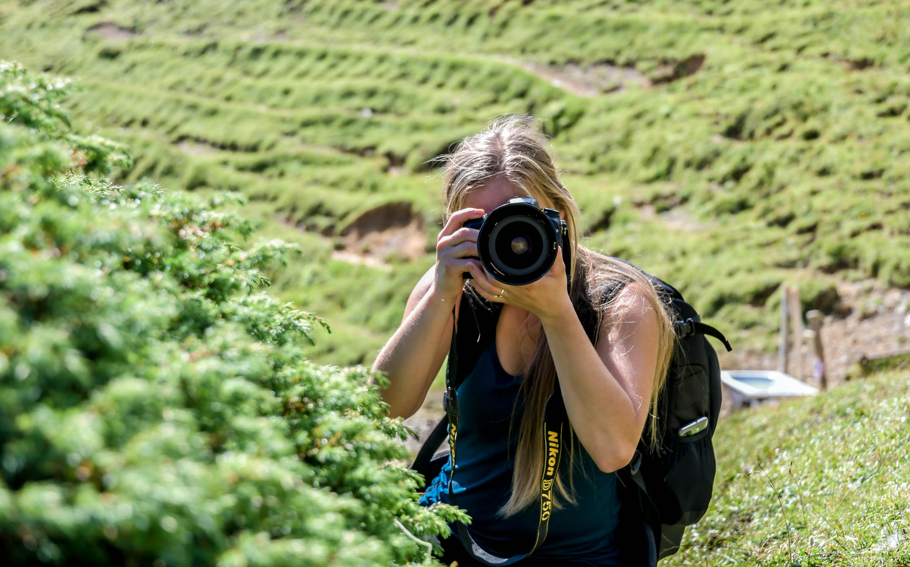
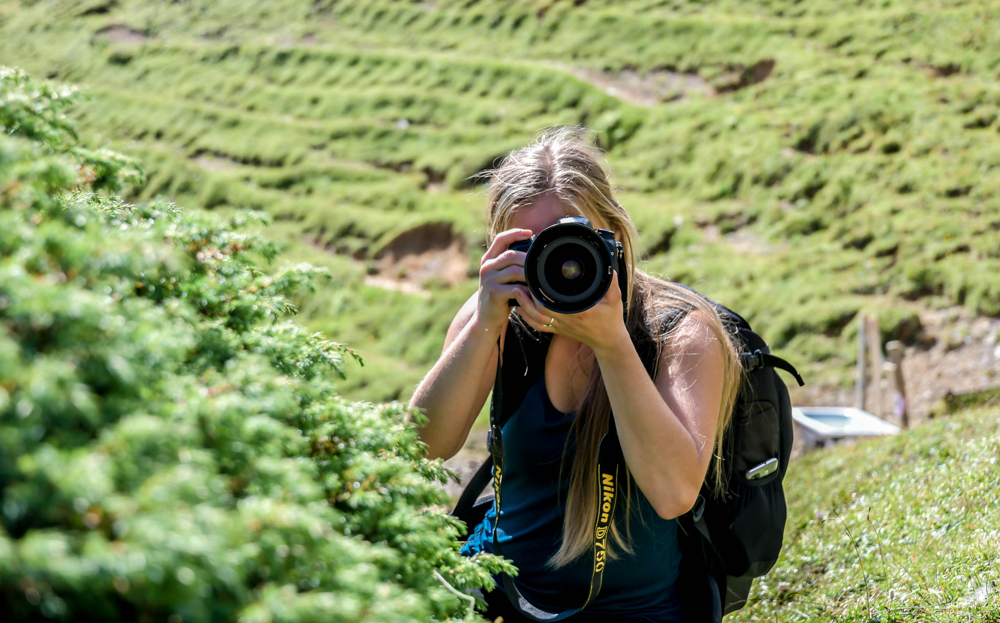

Eyes On The Nature
My favorite hobby
Welcome to my website, dedicated to the art and joy of nature photography. Capturing the beauty of the natural world has always been a passion of mine, providing a creative outlet and a way to connect with the environment around us. Through my lens, I strive to highlight the intricate details and breathtaking landscapes that often go unnoticed in our busy lives. From sweeping vistas to the delicate patterns of a single leaf, each photograph tells a story and invites you to pause and appreciate the wonder of nature. I invite you to explore my collection and join me on this visual journey through the beauty of our natural world.


 
